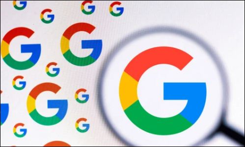

Google Reveals UK's TOP Trending Search Topics in 2022
Google reveals the top trending searches in the United Kingdom of the year 2022. The trending topics include the famous game Wordle, FIFA WorldCup as well the demise of Queen.
The Russia & Ukraine war was also in the top 5 most searched topics in the year 2022 & was listed in the top 5 trending searches in the UK, according to Google Annual Year in Search Statistics.
The Top 10 Most searched list in the United Kingdom includes Wordle alternate game 'Quordle', Johnny Depp as well.
No doubt, " 'Wordle', a puzzle game which asks people to guess the words had rose its popularity to an extreme level & upstaired its position to UK's top trending searches in the year 2022."
In this blog post, we'll be featuring some of the top trending google topics of United Kingdom in the year 2022.
Wordle
Wordle is a web-based word game created and developed by Welsh software engineer Josh Wardle and owned and published by the New York Times Company since 2022. In the game, Players have six attempts to guess a five-letter word, also feedback given for each guess in the form of colored tiles indicating when letters match or occupy the correct position.
The game is one of the most popular games in 2022 all over the planet with active members of 300,000 daily in Jan,2022. According to Google Trends, The game has successfully listed its name in the top trending games as well most searched topics in the United Kingdom as well all over the globe.
Though the game was made public in october,2021, Wordle has around 3 million players worldwide, but the number is declining.
Queen Elizabeth
The demise of the Queen was the top trending news event of the year, ahead of searches around the war in Ukraine and Monkeypox, with Omicron symptoms, train strikes, the opening of the Elizabeth line and cost of living payments all making the top 10.
The Queen death was a shocking news for the people of UK, as they had to goodbye the lady who served her whole life for the country and its bnefits. The late Queen’s passing and funeral were also the subject of three of the top four trending questions of the year all over the globe.
List of UK's Top Trending Topics in 2022

Top 5 Google Searches.
- Wordle
- World Cup
- Queen Elizabeth
- Ukraine
- Lateral flow test
Top 5 Searched Questions/Queries.
- Is the Queen dead?
- When is the Queen's funeral?
- Why is Russia invading Ukraine?
- Where will the Queen be buried?
- How old is Diana Ross?
Top 5 News Events.
- Queen Elizabeth passing
- Ukraine
- Monkeypox
- Storm Eunice
- NATO
Top 5 People.
- Mason Greenwood
- Johnny Depp
- Will Smith
- Liz Truss
- Amber Heard
Queries Related to 'How Many'.
- How many cities are there in Wales?
- How many countries end in stan?
- How many people watched the Queen's funeral?
- How many doors are there in the world?
- How many episodes in Stranger Things 4?
Top 5 Movies.
- Encanto
- The Batman
- Uncharted
- Thor: Love and Thunder
- Black Adam
The above mentioned categories and lists are the top trending topics and searches from UnitedKingdom in 2022. 2022 was a busy year with many incidents where Corona Cases were almost over, Ukraine & Russia had war, UK had to lose its Queen, FIFA WorldCUp was successfully held in Qatar with Argentina being the winner, Wordle being a famous game all over the globe.
The reports of Google Search 2022 include all the trending and popular topics happened in 2022. About 4BIllion+ users used Google as their search engine. Though many unpredictable incidents happened in the year 2022, the year was better if compared to 2020 & 2021 combined.